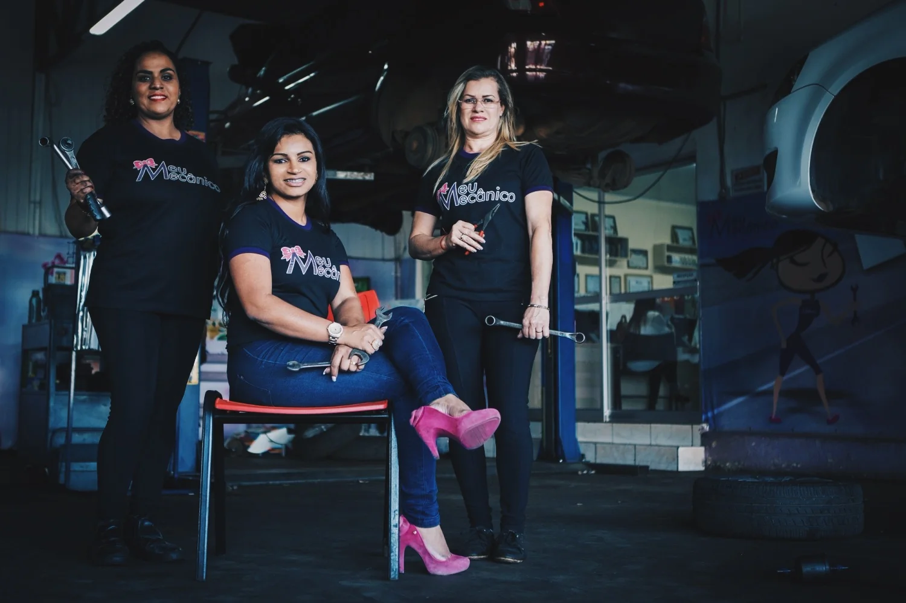

Uma história feita de pessoas
O cuidado tem
nome, rosto
e propósito.
Conheça a Meu Mecânico.
Uma oficina que coloca você no centro da conversa.
Uma oficina.
Uma escolha.
Outro caminho.
A Meu Mecânico nasceu em Ceilândia, em 2010, com atuação na manutenção geral de veículos leves.
À frente dessa trajetória, Agda Oliver ajudou a construir um espaço de atendimento voltado às mulheres. A história reúne trabalho, aprendizado e o compromisso de tratar as pessoas com ética e transparência.
O reconhecimento veio também fora da oficina: Prêmio Empreendedor Destaque em 2011 e 2012 e, em 2013, o Prêmio Sebrae Mulher de Negócio em nível nacional para Agda.
Mais que guardar conquistas, é uma história que inspira a forma de olhar para o cuidado com o carro e com quem dirige.
Explore os registros dessa trajetóriaRespeito
como ponto
de partida.
Reparação automotiva para mulheres, com inovação, ética e transparência.
O propósito da marca orienta a experiência: escutar, respeitar e construir relações de confiança.
Fé e gratidão
Respeito às pessoas
Criatividade
Ética
Comprometimento
Inovação
Qualidade
Uma relação
que começa
com gente.
Fotografias reais do acervo da marca.
Momentos de uma história coletiva.
